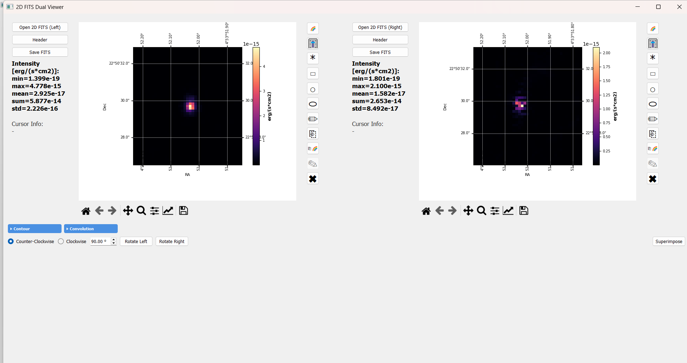
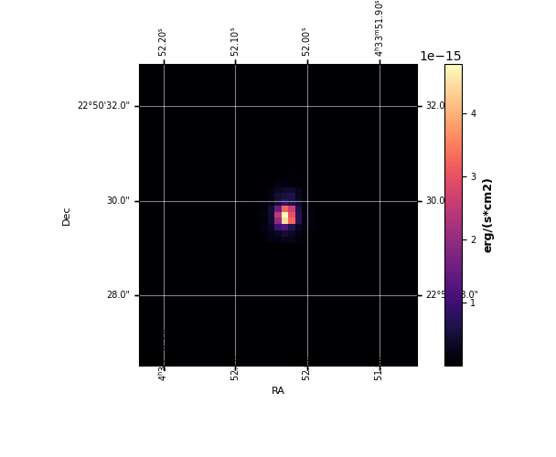
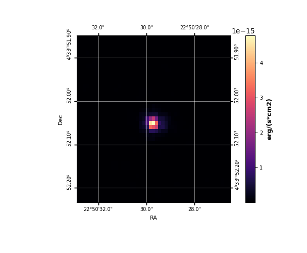
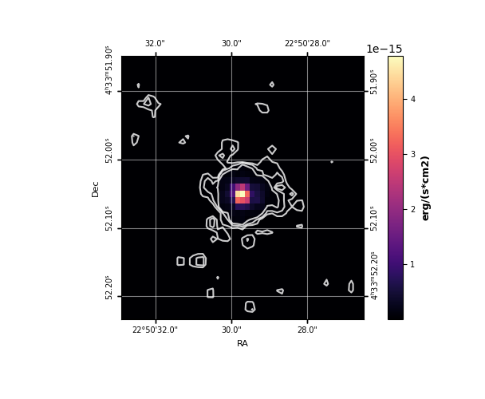
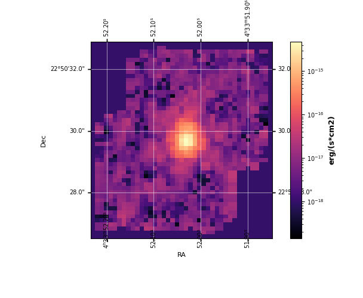
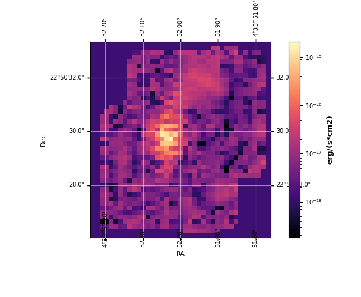
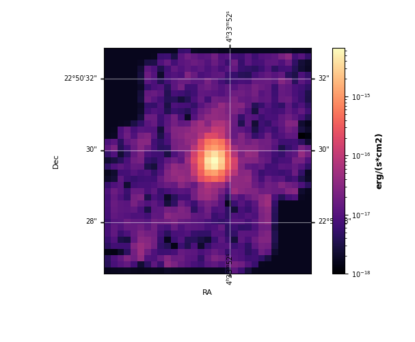

2D FITS Dual Image Viewer
The 2D FITS Dual Image Viewer is a standalone side-by-side viewer for 2D intensity maps, moment maps, and derived FITS products. It is fully WCS-aware, with interactive coordinate display and a full set of multi-image analysis tools.
This guide walks through every feature of the viewer in the order most users will encounter them. For a top-level feature summary, see the 2D FITS Dual Image Viewer section of Features.


Launching the viewer
The 2D Viewer can be opened from the main IFU Analyzer window, or run on its own when no cube is loaded. Either way, you get a dual-panel layout with Left and Right image slots that each behave independently.
Image Display
Loading images
Click Open 2D FITS (Left) or Open 2D FITS (Right) to load a 2D FITS image into the corresponding panel.
Each panel keeps its own WCS, scaling, and colormap state — you can mix any two images of any pixel scale or orientation.
A 2D viewer panel accepts any standard 2D FITS image: intensity maps, Gaussian-derived maps (peak, sigma, area), moment maps, RGB-channel exports, etc.


WCS grid overlay
If the FITS header contains a celestial WCS (
CTYPE1/CTYPE2withRA---*/DEC--*), an RA/Dec grid is automatically drawn over the image.Tick label format auto-scales to the field of view — degrees → arcmin → arcsec → sub-arcsec.
Tick positions remain correct after any rotation.
Non-celestial WCS automatically falls back to plain pixel axes.
Cursor readout and statistics
Move the mouse over either image and the left side panel shows live:
Pixel coordinates
(x, y)RA in
hh:mm:ssDec in
dd:mm:ssFlux value at the cursor (with the unit from
BUNIT)
The statistics panel reports min, max, mean, sum, and standard deviation of the displayed image (or of the region, if you draw one), the color range in use, and the unit string from
BUNIT.
Color scale and colormap
Each panel has a Scale icon that opens the “Scale and Color Range” dialog. It has three scales:
Linear — direct mapping
Log —
log10of the data (useful for faint extended emission)Power — normalized data raised to a gamma value that you set (boosts high-flux regions when gamma is above 1)
The color range can be absolute (typed values) or percentile.
Click the Colormap icon on either panel to open the colormap dialog and pick any matplotlib colormap. Colorblind-friendly options are included.
The Copy icon on each panel opens a menu. It copies the selection, the colormap, or the scale and range from the other panel.

Header viewer
Click Header on either panel to open a dialog listing every FITS header card for that image. Useful for checking
BUNIT, the WCS keywords (CTYPE,CDELT,CD*_*,PC*_*), and instrument identifiers (INSTRUME,TELESCOP).

Image Rotation
The Rotation tool turns the image about its centre by any angle while keeping the WCS correct, so RA/Dec coordinates remain accurate.
Performing a rotation
Select the direction (Clockwise or Counter-Clockwise).
Enter the angle in degrees (any positive number).
Click Rotate (Left) or Rotate (Right) to apply the rotation to that panel.


What happens internally
scipy.ndimage.rotateis used withreshape=Trueandcval=NaN. Border pixels created by the rotation are NaN, not zero, so they don’t contaminate later analysis.The CD matrix is updated as
CD_new = CD_orig × R⁻¹whereRis the 2D rotation matrix for the opposite of the requested angle.CRPIXis not changed — the reference pixel stays anchored to the same sky coordinate, so RA/Dec tick labels remain correct.Rotations are cumulative — applying 30°, then 30° gives the correct 60° image (errors do not stack).
Saving the rotated image
Click Save FITS on the panel to write the rotated image and its updated WCS header to a new FITS file. The new file is self-contained — you can load it into the viewer (or any other tool) and the WCS will be correct.
Contour Plotting
Generate sigma-level contours from one image and draw them on the same panel or on the other panel (WCS-matched cross-image contours).
Drawing contours
Open the Contour group and click Plot.
In the “Plot WCS Contour” window, choose:
Plot contour ON: which panel to draw the contour overlays on (Left Image / Right Image)
Generate contour FROM: the same image (Same Image (Self)), or the opposite panel’s image (Other Image (Match WCS)) for cross-image contours
Background Std: leave blank to use Astropy
sigma_clipped_stats(3σ clipping) for automatic background estimation; or enter a custom valueSigma levels: comma-separated list, e.g.
3, 5, 10Contour Color: white, red, green, cyan, magenta, yellow, or black
Click Plot to draw the contours.
For each level N in your list, a contour line is drawn at
median + N × std, where median and std are from the
background statistics.

The result is a contour overlay on the chosen panel:


The contours stay on the panel when you change the colormap or the scale of the panel.
Cross-image contours (WCS-matched)
When you generate contours from a different panel’s image, the contour vertices are transformed through both images’ WCS so they land at the correct sky coordinates on the destination panel. This works even when the two images have:
Different pixel scales
Different array sizes
Different orientations
Select Other Image (Match WCS) as the “Generate contour FROM” source, and the contours match across both panels via WCS.
Stacking and clearing
Multiple Plot runs add contour sets on top of each other — for example, draw 3σ in white, then 10σ in red.
Click Clear (in the Contour group) to remove all contour overlays from a panel.
Contour Export / Import
Once you have a set of contours you like, you can save them as a human-readable text file and load them again, on this image or on another one.
Save contour as .txt or .csv
In the Contour group, click Save. If both panels have contours, choose the panel. Then enter a filename (
.txtor.csv).Output is a comma-separated ASCII file:
# IFU Analyzer 2D - Contour Export
# level, x_pixel, y_pixel, RA_deg, Dec_deg
3.000000e+00, 42.1234, 18.7654, 67.90591, 18.20682
3.000000e+00, 42.5234, 18.6754, 67.90585, 18.20680
...
Each row is one vertex on a contour path. The sigma level is the first column. Pixel coordinates and RA/Dec are included so the file can be used by any external tool.
Load saved contour
Click Load (in the Contour group), choose the panel that gets the contour, and select a saved contour
.txtor.csvfile.Choose the line color.
The contour is drawn on the panel through the WCS mapping. It lines up on an image with a different pixel scale or orientation.
WCS Superimpose
Overlay two images that have different WCS grids — different pixel scale, array size, orientation, or pointing — onto a single panel.
Procedure
Load one image in the Left panel and another in the Right panel.
In the Contour group, click Superimpose.
Choose:
The Background (reference) image (Left or Right). This becomes the reference grid
The Overlay colormap
The Overlay alpha (transparency, 0.1-1.0; ~0.5 is a good starting point)
The viewer reprojects the overlay image onto the background image’s pixel grid with
reproject_exactfrom thereprojectpackage, which conserves flux, and blends it with the alpha that you chose.
The overlay disappears when the panel is drawn again, for example when you change its colormap or scale. To remove the overlay, change the colormap or the scale of the panel.
If the two images do not line up, open Header on each panel and compare the WCS
keywords (EQUINOX, CRPIX, the CD matrix, and so on).
Pair — pairwise resolution matching
Match two images of one field to the same spatial resolution so they can be compared pixel-by-pixel. This is the standard step before a flux comparison between two lines or two instruments (e.g. MIRI vs NIRSpec H₂ intensity).
Requirements
Both images are from MIRI or NIRSpec. Other instruments are not supported, because the PSF formulas exist only for these two.
Both images are in a flux-per-pixel unit. A surface-brightness unit such as MJy/sr is rejected (“Unsupported BUNIT”).
The images overlap on the sky.
Each image has a line wavelength. The tool reads it from the
LINEWAVEheader key (written by the rotational-diagram “Save Maps”), or from the middle ofLAMMINandLAMMAX(written by the Gaussian-map export). If the header has neither, the tool asks you for the wavelength in µm.
Procedure
Load both images into the Left and Right panels.
Open the Convolution group and click Pair.
A confirmation dialog shows:
Which image will be convolved
The two PSF widths, the Gaussian kernel σ, and the output grid dimensions
Click Yes to run.
Choose a save path — the result is written as a 2-HDU FITS (image +
COVERAGEextension, the per-pixel overlap fraction from 0 to 1).The success dialog shows a flux audit: the input total, the output total, and
Ratio out/in.
What happens internally
The image with the longer wavelength is the reference, because its PSF is wider. The tool convolves the other image with a Gaussian kernel up to the PSF of the reference.
Kernel width:
σ = √(σ_ref² − σ_image²). Each σ comes from the PSF FWHM of the instrument at the line wavelength. MIRI:FWHM(") = 0.033 × λ(µm) + 0.106. NIRSpec: an approximate quadratic fit.Convolution uses
astropy.convolution.convolve_fftwith a normalized kernel. NaN pixels (for example the borders of an IFU footprint) are interpolated during the convolution and restored afterwards.The convolved image is then reprojected with
reproject_exactonto the native pixel grid of the reference image, and the flux is conserved.This is the same engine that the rotational-diagram Convolve Maps and Run Map use.
Guards and edge cases
Same wavelength: if both panels have the same wavelength, Pair shows a “nothing to convolve” message instead of running.
No overlap: if the two images cover completely different sky regions, the viewer warns “No Sky Overlap” and refuses to run. Load images of the same field.
Missing pixel scale: if a header has no valid
CDELTor CD matrix, the viewer shows a “Missing Pixel Scale” message. The pixel scale is necessary to compute the kernel size.Reading the flux audit: a ratio close to 1 (within about 1%) means that the flux is conserved. A clearly lower ratio means that part of the image falls outside the grid of the reference image. A ratio near 0 means that the two images barely overlap. A small deviation can also come from NaN pixels at the edge of the image footprint.
Worked example: MIRI ch1-long (Left) and ch2-long (Right) as the pair, both in log scale:




And the Pair result – ch1-long convolved and reprojected onto ch2-long’s grid, still in log scale:


Batch — multi-image resolution matching
Bring several images to one resolution in a single step.
Procedure
In the Convolution group, click Batch to open the batch dialog.
Use + Add FITS Files to add two or more 2D FITS files. The requirements are the same as for Pair: MIRI or NIRSpec, a flux-per-pixel unit, and an overlap on the sky. The tool reads or asks for the line wavelength of each file.
Click Process & Download ZIP.
Choose a save path for the output
.zipfile.
The dialog prevents you from launching when the inputs cover disjoint sky regions — a “No Sky Overlap” warning lists which file pairs don’t share sky, so you can remove the off-field file before retrying.
What happens internally
The file with the longest wavelength is the reference. The tool convolves every other file to the PSF of the reference and reprojects it onto the native grid of the reference. The reference file is not smoothed.
Output
All outputs are packed into a
.ziparchive — onematched_<name>.fitsfile for each input, all on the same WCS grid, ready for pixel-by-pixel comparison.Each output FITS includes the
COVERAGEextension (per-pixel overlap fraction 0-1).The completion dialog shows the flux audit (the output total divided by the input total) for each file. The same reading rules as for Pair apply.
Region Selection
The 2D Viewer shares its region-selection code with the main cube viewer (the same
RegionSelectionMixin), so drawing, editing, and reading stats back all work the same
way as Selecting Regions:
Point — single-pixel readout
Rectangle — axis-aligned box
Circle — fixed-aspect-ratio ellipse
Ellipse — independently adjustable major and minor axes
Freehand — click to add vertices, double-click to close
Once a region is drawn on either panel, statistics appear in the image stats panel: min, max, mean, sum, std for the pixels enclosed by the region. Edit shape toggles drag/resize handles and the Copy menu copies the selection, the colormap, or the scale and range to the other panel, exactly as in Selecting Regions.
The 2D viewer has its own Region group with three buttons: Save Slice (Masked) (the image with everything outside the region set to NaN), Save Region, and Import Region. They work like the buttons of the same name in the main window (Selecting Regions). A plain Save Slice and Save Cube (Masked) exist only in the main window.
Copy is the one place behavior actually differs: the two 2D panels can hold images of completely different pixel scale and orientation (unlike the main viewer’s two slices, which always share one cube’s grid), so copying a selection here reprojects its corners through both panels’ WCS – a rectangle can come out as a rotated polygon on the other side if the two images don’t share an orientation, rather than a plain pixel-index copy.